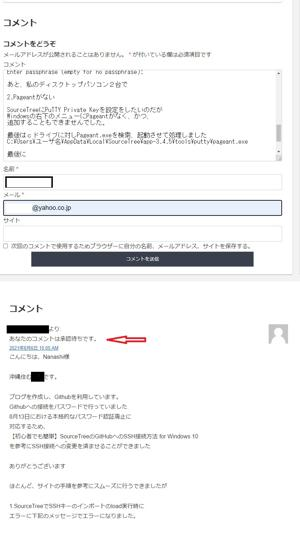
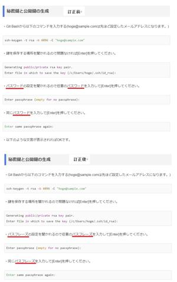
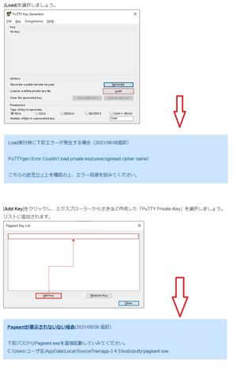

うるがいの話 ある日
最新:
ウェブサイトへのコメント
うるがいとは 前提知識です
カニの画像をクリックすると『うるがいの話』サイトを表示します

|
うるがい(ｳﾙｶﾞｲ urugai)とは、『もずくがに』の名前でとても大きくなります。
|

|
たながー（ﾀﾅｶﾞｰtanagaa）とは手長えびのことで、何種類かあり大きいのは車
エビぐらいになります。
|

|
ぶながー(bunagaa)とは、赤い髪の毛、赤い身体、そして身長は１ｍ２０ｃｍ
ぐらい、川の蟹を食べているの目撃された。場所は沖縄県国頭郡大宜味村のと
ある村僕の隣近所に住んでいる爺さんから、聞いた話です。
|
2021年08月12日 (木）ウェブサイトへのコメント
16:05



日々ウェブサイトにお世話になっている。数か月以上も解決できずことがこの
サイトのおかげで解決できた。
【初心者でも簡単】SourceTreeのGitHubへのSSH接続方法 for Windows 10
ただし、全てサイトの手順でうまくいかなかった。もしかしたら、同じくこの
サイトと利用して困る人がいるかもと、サイトの内容を訂正させようと手段が
あるかとサイトを調べると「コメント」欄があった。どれどれ、とコメント文
を書き込み、必須の名前とメールアドレスを設定し送信を行う。すると『あな
たのコメントは承認待ちです』と確認の内容が表示された。ほほ、メールで何
らかの通知がくるだな、と思っていた。送信は８月６日（金）の１０時に行う
なかなかメールは来ない、あれ！、何かあったのかなとサイトをみると８月８
日付けでコメントの内容が反映されていた。へー、メールのやり取りはしない
んだ、と少しムッとしたが。ま、いいか、いちいち対応するのは大変だしな、
この記事を書いた人(Nanashi)の紹介では
Nanashi
・現役のシステムエンジニア
・キャッシュレス決済システムなどの大規模開発を推進
・数多くのプログラマを統括
とあった、ⅠＴ業界の人だからだろうか・・・・。それとも次のコメントにプ
ライドを傷つけられたから（うふふ）
ちなみに、秘密鍵と公開鍵の生成の説明文は
パスワードでなくパスフレーズが正しい？
就活の経験を活かし、コメントのしまいは次で閉める
最後に
私と同じようにハマる人がいるかもしれません、
サイトになにかしら反映できるとありがたいです
では、益々のご活躍をお祈り申し上げます
追記）サイトに追加された文で誤りを見つけてしまった。
下記パスからPageant.exeを直接起動していみてください。
正しくは下記パスからPageant.exeを直接起動してみてください。
ま、ⅠＴ業界の人だし